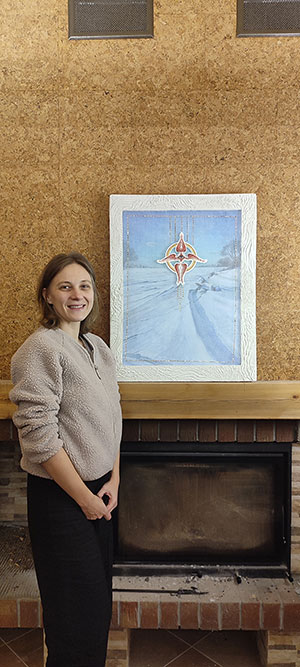
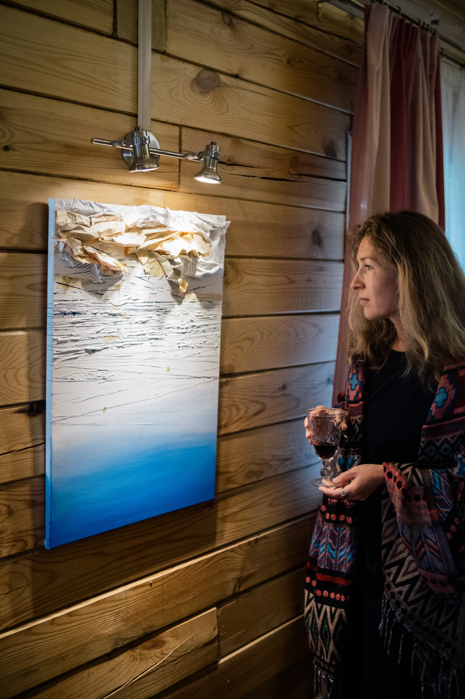

Арт-резиденция ВзаимоДействие
Декабрь 2024 — «В тишине»
Зимняя резиденция в Спирино
О резиденции
Состояние покоя, тишины, наблюдение за собой и окружающей природой зимой.
Ольга Гетманцева (Москва)

«Снег. Девушка. Вода», 2024
Холст 90×80 см, акрил, смешанная техника
Покрытая снегом бесконечная равнина или гладь воды на закате? Найденные среди сугробов природные артефакты или обнажившееся морское дно?
Художница говорит о своих эмоциях в момент лицезрения красивого сибирского пейзажа и одновременно задаётся вопросами о том, существует ли объективная реальность вообще? Может ли картина быть не только изображением, но и осязаемым объектом-памятью о психологически важном путешествии, где чувства, природа, написание стихов и физические ощущения сливаются на поверхности холста?
Родина Евгения (Москва)

Арт-объект «Взгляд», 2024
Сухая пастель, бумага, москитная сетка, фольга, плиточный клей, 65×50 см
Картина «Взгляд» представляет собой сочетание двух слоёв, символизирующих взаимодействие внешнего и внутреннего мира художника. Первый слой — зимний пейзаж, выполненный с помощью сухой пастели, погружает зрителя в атмосферу спокойствия и умиротворения. Холодные, но мягкие тона создают ощущение тишины, позволяя зрителю ощутить красоту зимней природы.
Второй слой картины — это сетка, на которой изображён херувим, окружённый тонкими золотыми линиями. Этот элемент служит фильтром, через который художник воспринимает внешний мир. Херувим, как символ вдохновения и творческого начала, олицетворяет самих художников, которые пропускают через себя энергии окружающей действительности, преобразуя их в нечто уникальное и доступное зрителю.
Картина вызывает чувство глубокой тишины и созерцания, приглашая зрителя задуматься о связи между внутренним и внешним мирами. Золотые линии, пересекающие сетку, символизируют свет и вдохновение, которые художник получает из окружающего мира и передаёт зрителю. Эта работа побуждает к размышлениям о том, как мы воспринимаем реальность и как она влияет на наше внутреннее состояние.
Ирина Анохина (Новосибирск)

«Подтекст», 2024
Холст 70×50 см, смешанная техника
Сколько слов мы слышим за день? Сколько — читаем, проглатываем, пролистываем, не оставляя внутри ни следа? Что происходит, когда смыслов становится слишком много? Когда каждая фраза требует внимания, а всё вместе — уже невыносимо?
«Подтекст» — это работа о перегруженности. О языке, который накапливается до состояния шума. О попытке вслушаться, когда всё уже сказано. И о том, что остаётся в тишине, когда слова растворяются.
Что, если под всеми уровнями речи — ничего? Не скрытая истина, не тайный код, не ответ, а просто — пустота? И если это так, то может ли в этом «ничего» быть облегчение? Пространство? Возможность дышать?